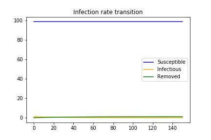

COVID-19について、感染病の数学予測モデル「SIRモデル」をPythonで実装し、アニメーションを作成します。
This is an attempt to understand COVID-19 by implementing the SIR model, a mathematical prediction model for infectious diseases, in Python and using animation.
【阪大医学部卒が語る新型コロナ！】Pythonによる感染者数シミュレータの作り方 - YouTube
【COVID19×Python】SIRモデルをアニメーションを作って理解する-Med Python
Google Colab
SIRmodel-animation - Colaboratory
Jupyter Notebook
SIRmodel_animation.ipynb